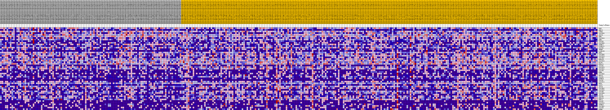
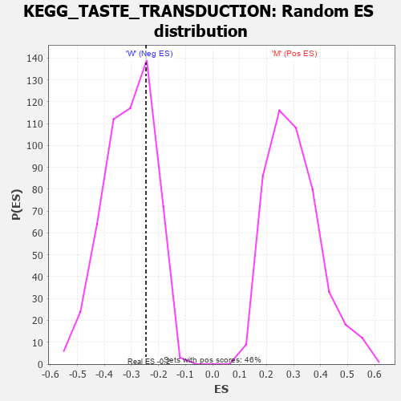

Profile of the Running ES Score & Positions of GeneSet Members on the Rank Ordered List
| Dataset | MUC16.MUC16.cls#M_versus_W.MUC16.cls#M_versus_W_repos |
| Phenotype | MUC16.cls#M_versus_W_repos |
| Upregulated in class | W |
| GeneSet | KEGG_TASTE_TRANSDUCTION |
| Enrichment Score (ES) | -0.2463197 |
| Normalized Enrichment Score (NES) | -0.7987236 |
| Nominal p-value | 0.7206704 |
| FDR q-value | 1.0 |
| FWER p-Value | 1.0 |
| PROBE | DESCRIPTION (from dataset) | GENE SYMBOL | GENE_TITLE | RANK IN GENE LIST | RANK METRIC SCORE | RUNNING ES | CORE ENRICHMENT | |
|---|---|---|---|---|---|---|---|---|
| 1 | PRKX | na | 2534 | 0.105 | -0.0206 | No | ||
| 2 | GNG13 | na | 2597 | 0.104 | 0.0032 | No | ||
| 3 | ITPR3 | na | 2696 | 0.102 | 0.0259 | No | ||
| 4 | TAS2R38 | na | 2933 | 0.098 | 0.0452 | No | ||
| 5 | ADCY6 | na | 3355 | 0.091 | 0.0594 | No | ||
| 6 | GNB1 | na | 3633 | 0.087 | 0.0754 | No | ||
| 7 | TAS2R10 | na | 5084 | 0.068 | 0.0656 | No | ||
| 8 | GNB3 | na | 6235 | 0.056 | 0.0583 | No | ||
| 9 | TAS1R3 | na | 6550 | 0.053 | 0.0654 | No | ||
| 10 | TAS2R60 | na | 8374 | 0.038 | 0.0416 | No | ||
| 11 | SCNN1A | na | 9949 | 0.025 | 0.0191 | No | ||
| 12 | CACNA1A | na | 13133 | 0.004 | -0.0377 | No | ||
| 13 | TAS2R5 | na | 16562 | -0.008 | -0.0978 | No | ||
| 14 | TRPM5 | na | 16889 | -0.010 | -0.1013 | No | ||
| 15 | CACNA1B | na | 20984 | -0.030 | -0.1684 | No | ||
| 16 | GNG3 | na | 21479 | -0.032 | -0.1696 | No | ||
| 17 | TAS2R46 | na | 22091 | -0.034 | -0.1724 | No | ||
| 18 | TAS2R19 | na | 24583 | -0.045 | -0.2068 | No | ||
| 19 | TAS2R42 | na | 24742 | -0.045 | -0.1988 | No | ||
| 20 | PRKACB | na | 25430 | -0.048 | -0.1997 | No | ||
| 21 | TAS2R14 | na | 25435 | -0.048 | -0.1883 | No | ||
| 22 | PLCB2 | na | 25966 | -0.050 | -0.1859 | No | ||
| 23 | PRKACA | na | 27466 | -0.055 | -0.1997 | No | ||
| 24 | TAS2R1 | na | 27665 | -0.056 | -0.1898 | No | ||
| 25 | TAS2R20 | na | 27867 | -0.057 | -0.1797 | No | ||
| 26 | TAS2R31 | na | 29098 | -0.061 | -0.1873 | No | ||
| 27 | TAS2R8 | na | 32357 | -0.071 | -0.2291 | Yes | ||
| 28 | GRM4 | na | 32398 | -0.072 | -0.2126 | Yes | ||
| 29 | TAS2R40 | na | 33361 | -0.075 | -0.2120 | Yes | ||
| 30 | GNAT3 | na | 34046 | -0.077 | -0.2059 | Yes | ||
| 31 | TAS1R1 | na | 34222 | -0.077 | -0.1904 | Yes | ||
| 32 | SCNN1B | na | 35160 | -0.080 | -0.1881 | Yes | ||
| 33 | TAS2R7 | na | 36778 | -0.085 | -0.1969 | Yes | ||
| 34 | TAS2R13 | na | 37932 | -0.089 | -0.1964 | Yes | ||
| 35 | GNAS | na | 38550 | -0.091 | -0.1857 | Yes | ||
| 36 | ASIC2 | na | 38776 | -0.091 | -0.1678 | Yes | ||
| 37 | ADCY4 | na | 39739 | -0.095 | -0.1624 | Yes | ||
| 38 | TAS2R43 | na | 39791 | -0.095 | -0.1405 | Yes | ||
| 39 | TAS2R39 | na | 41077 | -0.099 | -0.1398 | Yes | ||
| 40 | TAS2R4 | na | 44339 | -0.111 | -0.1722 | Yes | ||
| 41 | TAS2R50 | na | 44887 | -0.113 | -0.1548 | Yes | ||
| 42 | ADCY8 | na | 45052 | -0.114 | -0.1304 | Yes | ||
| 43 | TAS2R3 | na | 45663 | -0.116 | -0.1135 | Yes | ||
| 44 | PRKACG | na | 47650 | -0.126 | -0.1192 | Yes | ||
| 45 | PDE1A | na | 49549 | -0.137 | -0.1206 | Yes | ||
| 46 | TAS1R2 | na | 49670 | -0.137 | -0.0897 | Yes | ||
| 47 | TAS2R16 | na | 49790 | -0.138 | -0.0585 | Yes | ||
| 48 | SCNN1G | na | 50924 | -0.147 | -0.0437 | Yes | ||
| 49 | TAS2R41 | na | 50954 | -0.147 | -0.0089 | Yes | ||
| 50 | TAS2R9 | na | 52793 | -0.167 | -0.0020 | Yes | ||
| 51 | KCNB1 | na | 54084 | -0.194 | 0.0214 | Yes |

